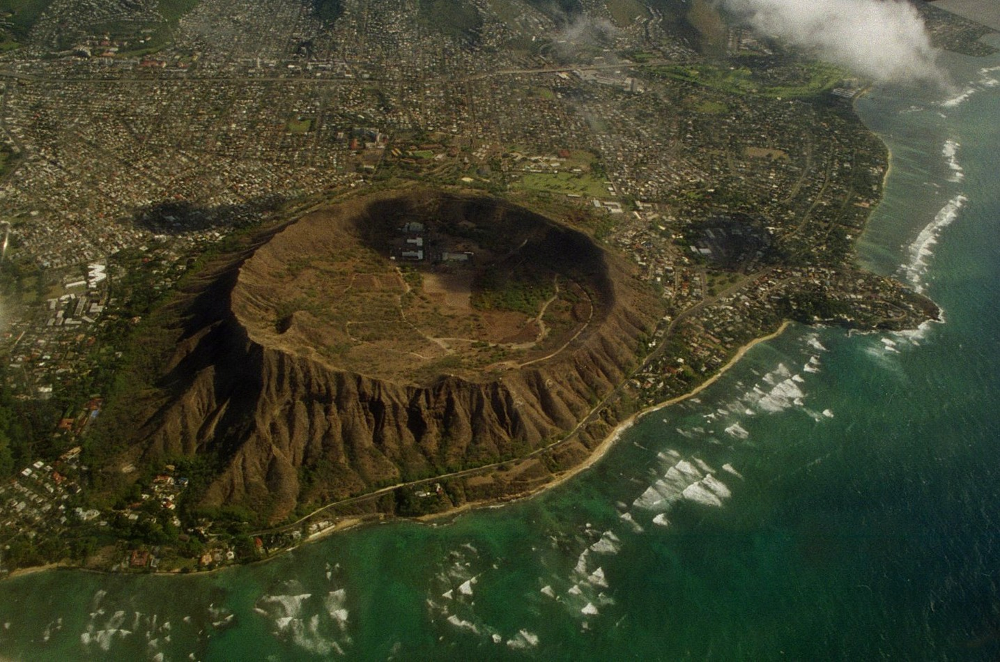

Welcome to Oahu

Oahu’s coastline is famous for its diverse beaches, from the busy shores of Waikiki to the well-known surf spots on the North Shore. Depending on the time of year, people come here to catch large winter waves, swim in the calm turquoise water, or just relax on the golden sand. The ocean is a central part of life on the island, shaping everything from daily recreational activities to local traditions.
A short drive from the beach leads to Diamond Head, a historic volcanic crater that forms a major part of the Honolulu skyline. The trail inside the crater takes hikers up steep stairs and through military tunnels to a summit with panoramic views of the coast and the lush Koʻolau mountains. Standing at the top and looking out over the island makes it easy to see why Oahu remains such a memorable place to visit or live.